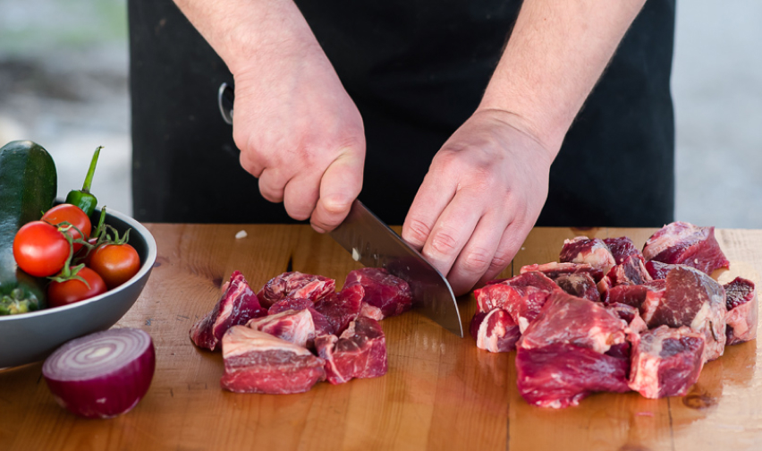
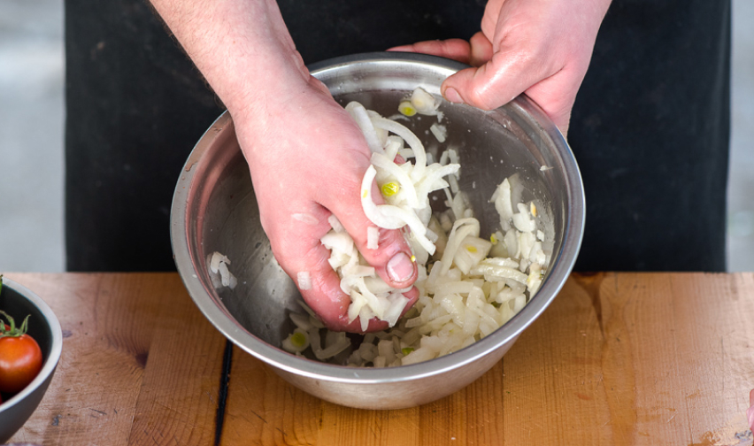
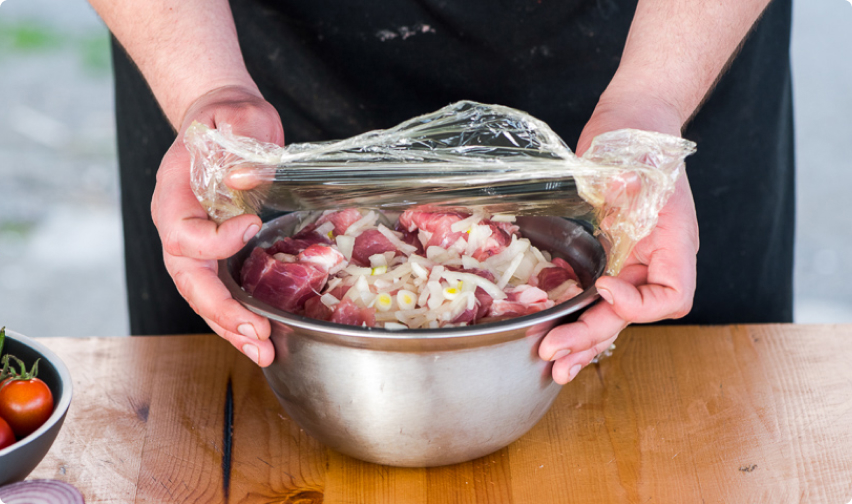

Шашлык из говядины на мангале

- Говяжья вырезка – 800 г
- Помидоры черри – 200 г
- Лаваш для подачи
- Пучок свежей зелени
- Крупная морская соль
- Кислые яблоки – 2 шт.
- Зерна кориандра – 1 ч.л.
- Паприка – 1/2 ч.л.
- Смесь перцев – 2 ч.л.
- Винный уксус – 1 ч.л.
Пошаговый рецепт приготовления
-
Подготовьте все ингредиенты для шашлыка. Говяжью вырезку вымойте, обсушите бумажными полотенцами. Нарежьте кубиками среднего размера и переложите в большую миску.
 -
Приготовьте маринад для шашлыка. Натрите яблоки на терке и отожмите сок руками (или воспользуйтесь соковыжималкой). Кориандр и перец слегка раздробите в ступке, но не измельчайте в муку. Смешайте в маленькой миске яблочный сок и все остальные ингредиенты маринада.
 -
Залейте получившимся яблочным маринадом кусочки говядины с большой миске и осторожно перемешайте. Накройте пищевой пленкой и уберите в холодильник на 1 час.
 -
Нанижите на шампуры кусочки мяса поочередно с помидорами черри. Выложите на решетку мангала. Обжаривайте, время от времени переворачивая, чтобы шашлык не подгорел.

-
Готовность шашлыка из говядины определяйте с помощью прокола острым ножом. Если выделяется красный сок, подержите мясо на мангале еще несколько минут. Если прозрачный — блюдо готово.
Видео-рецепт
Полезный совет. Чтобы говядина лучше пропиталась маринадом, нарезанное мясо можно оставить в нем на несколько часов и даже на ночь. Не переживайте: это тот самый случай, когда лишнее время точно не помешает.